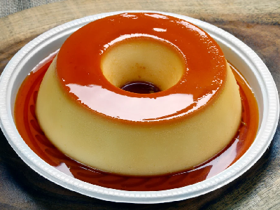

Pudim
Calda
Ingredientes
1 xícara (chá) de açúcar
Meia xícara (chá) de água
Modo de Preparo
Em uma panela de fundo largo, derreta o açúcar até ficar dourado.
Junte a água e mexa com uma colher.
Deixe ferver até dissolver os torrões de açúcar e a calda engrossar.
Forre com a calda uma forma com furo central (19 cm de diâmetro) e reserve.
Pudim
Ingredientes
- 1 leite condensado
- 2 medidas da lata de leite, ou 790ml
- 3 ovos
Modo de Preparo
Em um liquidificador, bata todos os ingredientes do pudim e despeje na forma reservada.
Cubra com papel-alumínio e leve ao forno médio (180°C), em banho-maria, por cerca de 1 hora e
30 minutos.
Depois de frio, leve para gelar por cerca de 6 horas.
Desenforme e sirva a seguir.